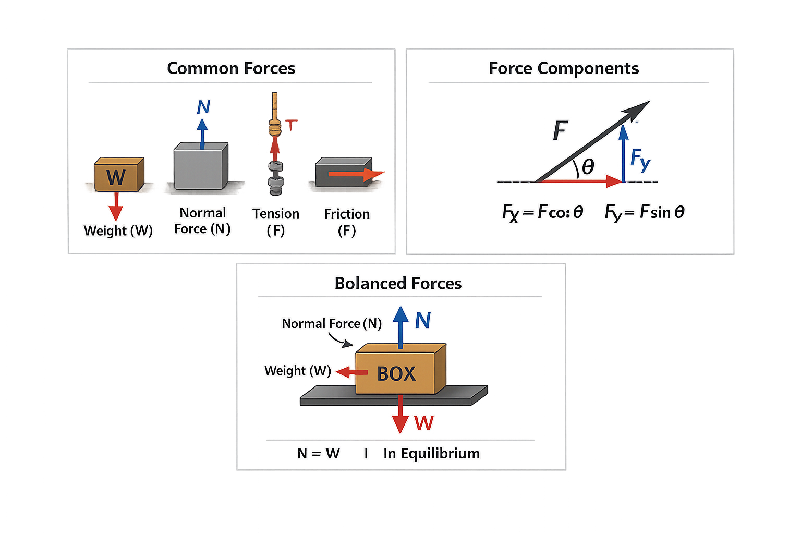

Forces & Equilibrium
Statics is the study of objects that are either at rest or moving at a constant velocity.
In both cases, the key idea is that there is no acceleration.
According to Newton’s Second Law, this means the net force acting on the object must be zero.
1. Understanding Forces
A force is any interaction that can change the motion of an object.
Forces are vector quantities, meaning they have both:
- Magnitude – how strong the force is
- Direction – the way the force is applied
Forces are measured in Newtons (N).
Some of the most common forces in statics include:
- Weight (W) – the force of gravity acting on an object (always downward)
- Normal Force (N) – the support force from a surface, acting perpendicular to it
- Tension (T) – the pulling force transmitted through a rope or cable
- Friction (F) – a force that resists motion between surfaces
Each of these forces behaves in a predictable way, which allows engineers to model and solve problems accurately.

Common forces in statics include weight, normal force, tension, and friction.
2. Forces as Vectors
Because forces have direction, they are often broken into components.
In two-dimensional problems, we usually split forces into:
- Horizontal components (x-direction)
- Vertical components (y-direction)
This allows us to analyze each direction independently, which simplifies solving equilibrium problems.
For example, a force at an angle can be separated into:
- A horizontal part
- A vertical part
This process is essential in nearly all statics problems.
3. Equilibrium
An object is in equilibrium when all forces acting on it are balanced.
This means the object will either remain at rest or continue moving at a constant velocity.
There are two main conditions for equilibrium:
- Translational Equilibrium – no movement in any direction
- Rotational Equilibrium – no rotation about any point
In this lesson, we focus on translational equilibrium.
4. Equilibrium Equations
To solve statics problems, we use the following equations:
- ΣFx = 0 → the sum of all horizontal forces equals zero
- ΣFy = 0 → the sum of all vertical forces equals zero
These equations come directly from Newton’s laws and are the foundation of statics.
If either of these sums is not zero, the object will accelerate.
5. Balanced Forces
Balanced forces cancel each other out. This means:
- For every force in one direction, there is an equal force in the opposite direction
For example:
- An object sitting on a table has weight acting downward
- The table provides an equal normal force upward
Since these forces are equal and opposite, the object remains at rest.
6. Why This Matters
Understanding forces and equilibrium is essential in mechanical engineering because it allows engineers to:
- Ensure structures remain stable
- Prevent mechanical failure
- Design safe and efficient systems
Every structure or machine must satisfy equilibrium conditions to function properly.
References and Further Reading
These sources provide additional explanations of force vectors,
common forces, free-body diagrams, and equilibrium.
Engineering Textbook
Engineering Mechanics: Statics
Author: Russell C. Hibbeler
Publisher: Pearson
Related topics:
- Force vectors
- Free-body diagrams
- Particle equilibrium
- Force components
- Normal force and tension
Visit Official Source
Engineering Textbook
Vector Mechanics for Engineers: Statics
Authors: Beer, Johnston, Mazurek and Cornwell
Publisher: McGraw Hill
Related topics:
- Vector forces
- Equilibrium equations
- Horizontal and vertical components
- Engineering problem-solving
Visit Official Source
Free Online Textbook
University Physics: Common Forces
Organization: OpenStax
Access: Free online
Related topics:
- Weight
- Normal force
- Tension
- Friction
- Force diagrams
Read Free Source
Government Reference
The International System of Units
Organization: National Institute of Standards and Technology
Abbreviation: NIST
Related topics:
- The newton
- SI measurement units
- Force-unit definitions
- Scientific unit conventions
View NIST Publication
Source note: This lesson presents established introductory
engineering concepts in original wording. Textbooks may require purchase,
while OpenStax and NIST resources are publicly accessible.